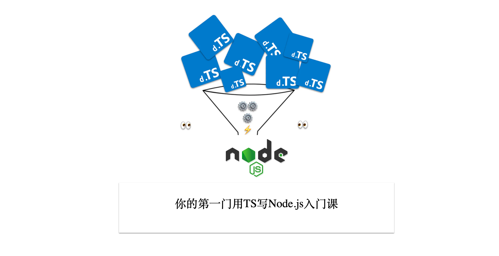

前言

AI时代放大了全栈的好处，很多以前我们觉得可以吃饭的一些技能都变成了必备技能，IT技术平民化，原因有2个。
1、AIGC时代，风口，快速实现更重要，资本不等人。
2、IT技术平民化，全栈化，必须要简单高效。
这样筛选下来，只有2种可能的语言，那就是Node.js和Python。Python是大模型必备，搞定服务端也是很轻松的，而要搞定前端和服务端，成本最低的就是用同一种语言，无疑Node.js是最好的选择。毕竟现在SDK标准三个语言必须实现，那就是Java、Node.js和Python。
除了AI时代放大了Node全栈外，Node.js自身的发展也到了一个必须要总结的时间点了。目前市面上的书、文章、课程主要是Node.js 8以前的（不知道朴灵的深入浅出2能否有突破），现在已经是Node.js v20了。Node.js v20里的很多新特性，比如下面是我觉得比较重要的一些。
Node.js v20的新特性
- V8(5.8→11.3) eventloop promise-base api（error-first） event npm
- ESM
- async/await + promise + hooks
- worker thread（tinypool）
- loader、network-import
- test runner
- 权限模型
- 可观测性，包括 logging/metrics/tracing，以及 APM 等
- 现代化的 HTTP：undici
- WASM
- N-API
除了第一条没变外，其他的差异还是蛮大的。差异如此大，目前还没有课程能够系统的进行讲解，这是我觉得非常可惜的，所以本课程后续也会持续的完善。
Node.js对比Deno，Deno基本上没有啥绝对优势，至于Bun.js还需要观望，按照现在的思路很难能突破Node.js的应用范围。
- Deno：默认支持TS，推荐network-import，现在也支持NPM了
- Bun：默认支持TS，内置包管理工具，更进一步。
无论是Deno也好，还是Bun也好，它们都选择了TS作为宿主语言，足以证明TS的优秀和流行。在Node.js世界，还需要转译(在Node.js v23版本后，已经支持TS了)，可能这也是Node.js一直被诟病落后的一个原因。但是，我们反过来想想，Node.js真的落后吗？我不这样认为。
- 核心够强，生态更强大。
- TS这种交给生态来做就好了，等成熟了，再像test runner收编。
- 克制，专注，社区驱动，更值得信赖。
TS已经是JavaScript开发中的主流选择，它的问题也是比较多的，比如下面这几条。
- 本身TS开发上手成本比JS高很多，尤其是类型体操，以及OO带来的各种不适感，导致很多人很反感
- 调试是一个大坑，前端很复杂，打日志，断点调试，TDD看起来很简单，但很多人都止步于断点调试。更何况加入了TS，让调试难度更大了。
- TS的编译器其实也比较多，从TSC到TS-Node到TSX、ESNO、TSUP，大量的内容。底层还有ESBuild、Sucrase等，选起来很难，学起来很烦。
- 对于很多写了很久TS的人，其实也不一定很标准，比如类型测试TSD用法等，用的也不算多
- 还有就是CJS和ESM各种规范转换，也是非常烦的。所以发布NPM包的时候需要注意很多细节
以上问题其实都是TS带来的成本，如果过不了这关，其实很难往下走。
至此，我们讲了3个要点。
- AI时代间接带动了Node全栈。
- Node.js v20是一个阶段性版本，需要重新梳理。
- TS已经是主流选择，但依然问题很多。
回到实际应用场景中，Node.js + TS下让很多初学者望而却步，为了更好的解决这个问题，我们才推出这门课程。本课程主要是科普最佳实践，讲解如何使用TS开发Node.js应用，从开发、调试、测试、发布四个方面进行讲解。为了让读者更容易理解，这里首先会讲解使用ESM进行开发，这是在使用Node.js v20版本必备的知识，更早一些CommonJS规范用法，可以参考狼书系列之卷一。然后讲如何使用TypeScript进行开发，让读者能够掌握我理解的比较好的开发实践，以及对比ESM写法和TypeScript写法的区别。
本课程有5个目的
- 讲清楚Node.js 8到Node.js v20之间的变化，直观感受是ESM模块支持和内置测试框架。
- 让读者了解核心ESM模块和内置的测试框架用法。
- 讲清楚TypeScript改写ESM编码之后带来的变化，以及TSC、TSX、TSUP、TSD工具使用。
- 工程实践，从HelloWorld到Monorepo，覆盖开发、调试、测试、发布全流程
- 知识面延展，比如ESBuild、Bundless等。